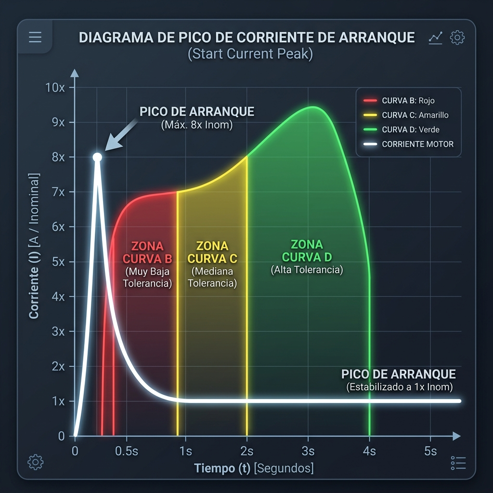
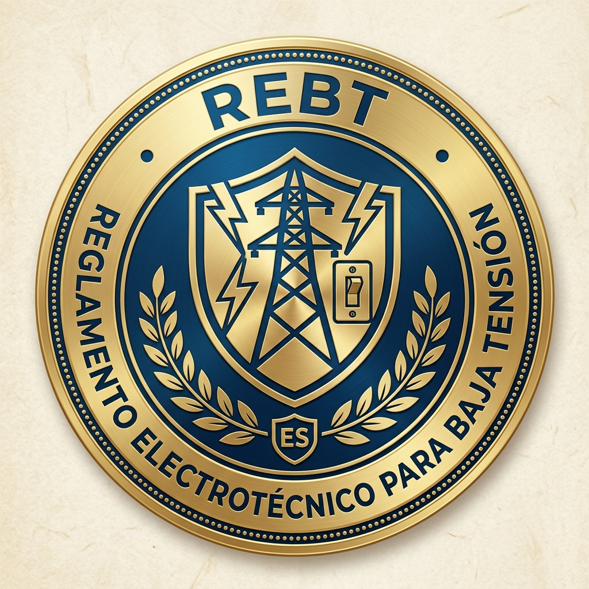

EL CONCEPTO
El reto era simplificar la enseñanza técnica sobre cuadros eléctricos y protecciones (magnetotérmicos, diferenciales, sobretensiones) para vendedores sin necesariamente formación técnica previa. La solución: una web-app interactiva optimizada para tablets que desglosa las funciones de cada módulo usando animaciones, analogías visuales y un cuestionario gamificado como evaluación. Además, el sistema destaca por la impartición presencial de clases: se puede operar con el teléfono móvil enlazado como "Control Remoto", desde el cual el instructor maneja los controles de la clase, revisa sus notas privadas y temporiza la sesión.
ESPECIFICACIONES
- TARGET: Formación interna para equipos de ventas de la sección electricidad.
- MODO INSTRUCTOR: Interfaz dedicada de control remoto a través de smartphone, con controles de paso, acceso a diapositivas y lectura de notas de clase en privado.
- FEATURES: Infografías interactivas, curvas de disparo dinámicas y validación de conocimiento (Quiz).
- UX/UI: Diseño Dark Mode, táctil-first optimizado para la retención visual visual de normativas (REBT).
PROCESO
01. ANÁLISIS DE LA FRICCIÓN
Identificación de los conceptos que más dificultaban a los nuevos vendedores: distinguir tipos de diferenciales, polaridades y poderes de corte de acuerdo a la normativa REBT.
02. DISEÑO Y METÁFORAS VISUALES
Se crearon diagramas desde cero con analogías (como usar dinámicas hidráulicas para explicar tensión e intensidad) y se mapearon secciones de un cuadro eléctrico hiperrealista.
03. DESARROLLO E IMPLEMENTACIÓN
Desarrollo front-end nativo asegurando rendimiento perfecto en dispositivos de baja gama. Se integró una navegación lineal como si de "historias" interactivas se tratara.
RESUMEN Y CONCLUSIÓN
Al transformar densos documentos técnicos en una ruta visual interactiva, se ha logrado reducir drásticamente el tiempo necesario para que un nuevo colaborador entienda la estructura de un cuadro eléctrico de vivienda. Gamificar la enseñanza sigue siendo una de las vías de asimilación de información técnica más efectivas.
GALERÍA / RECURSOS

// Uso de metáforas visuales para Tensión e Intensidad

// Diagramas detallados del panel general de protecciones

// Visualización de datos técnicos complejos (Curvas B, C, D)

// Material didáctico aplicado a normativas vigentes